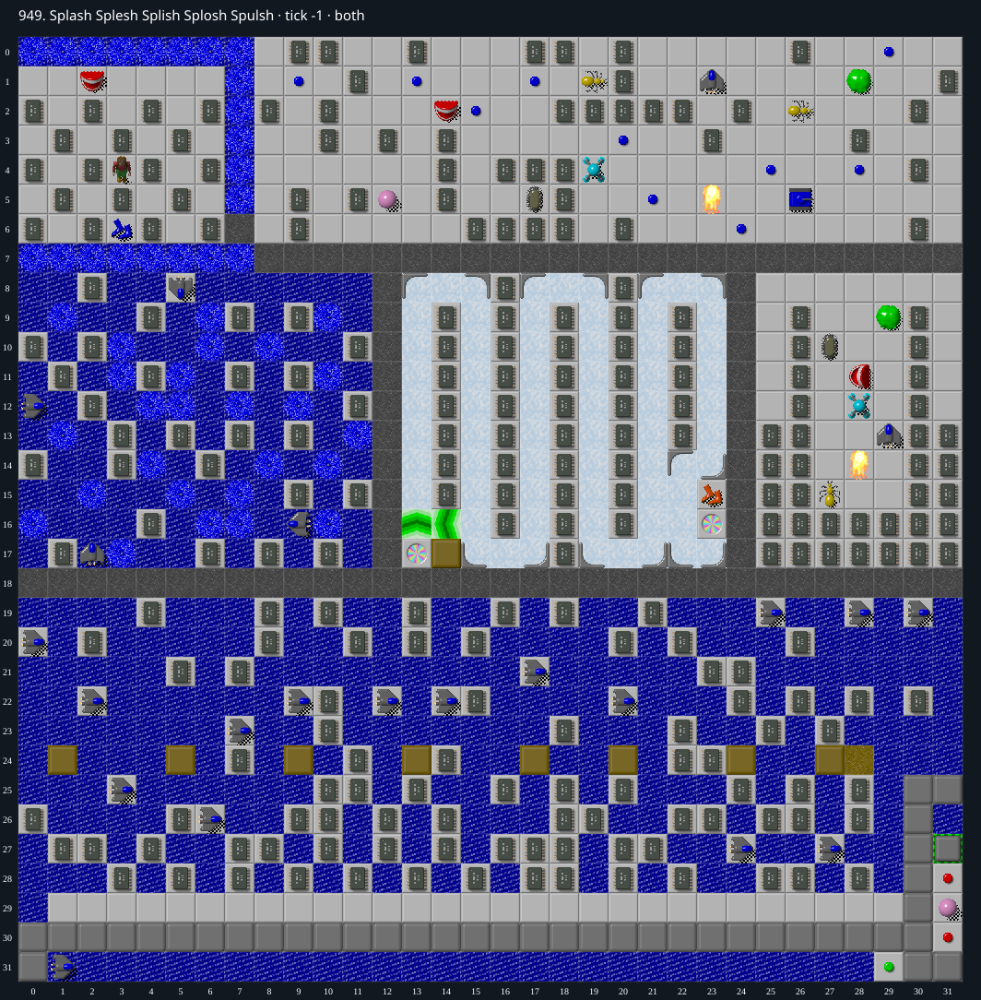

Jacques · Original Tile World MS
949. Splash Splesh Splish Splosh Spulsh
Impossibility argumentNeither map plane contains an Exit tile, and MS gameplay cannot create one.
149 chips required · 999 second time limit
Why completion is impossible
- Both raw DAT planes contain zero file-code 21 (Exit), verified over all 2048 tiles.
- Native MS endmovement is the sole place setting completed() to true, and requires the floor beneath Chip to be Exit.
- All transitions available in this map only move/reveal existing tiles or create fixed non-Exit tiles (empty floor, dirt, walls, actors); none produces an Exit. Cloners copy actors, not Exit terrain.
- By induction no reachable state contains an Exit; therefore no input sequence can satisfy the completion condition.
Inspect both layers
The main map shows the initial runtime state. Switch to the buried layer to inspect hidden terrain and items. Hover coordinates are also available in the downloadable SVG.


Recorded checks and attempts
- data audit: Decoded both 1024-cell DAT planes and exact level metadata; initialized production MS runtime and rendered actual game sprites.